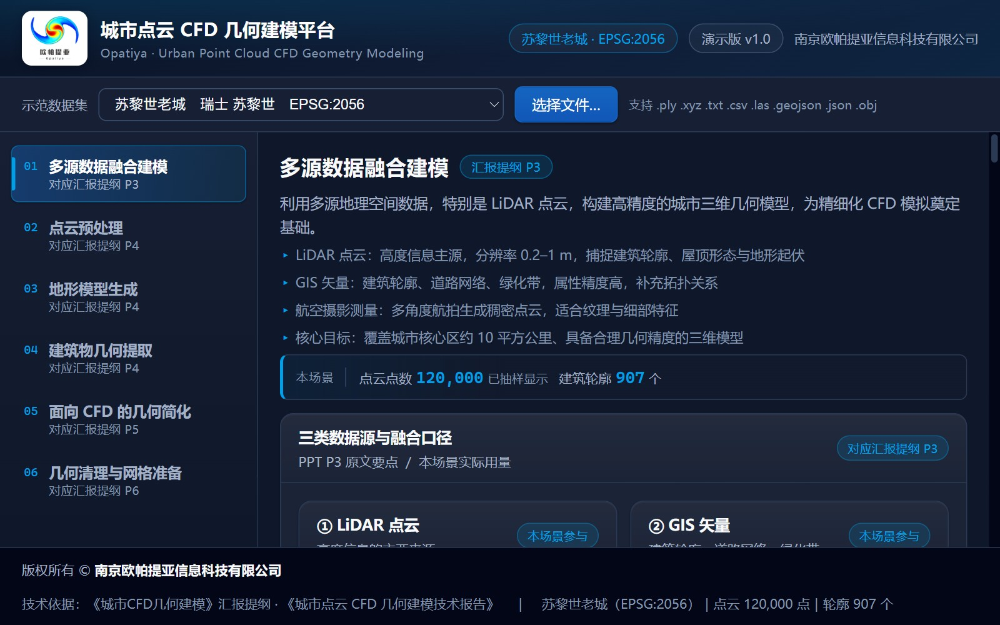
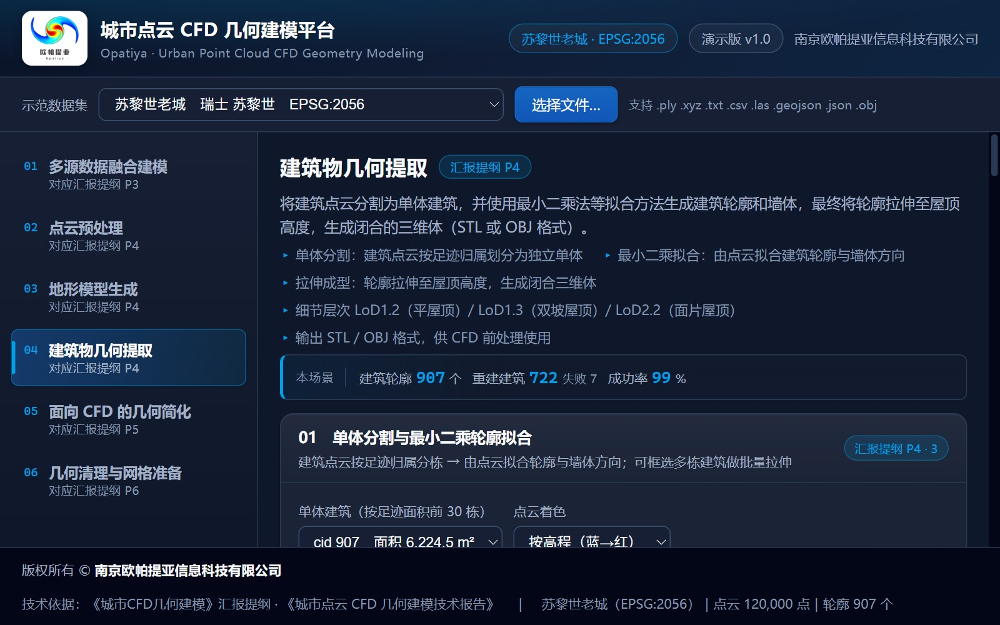
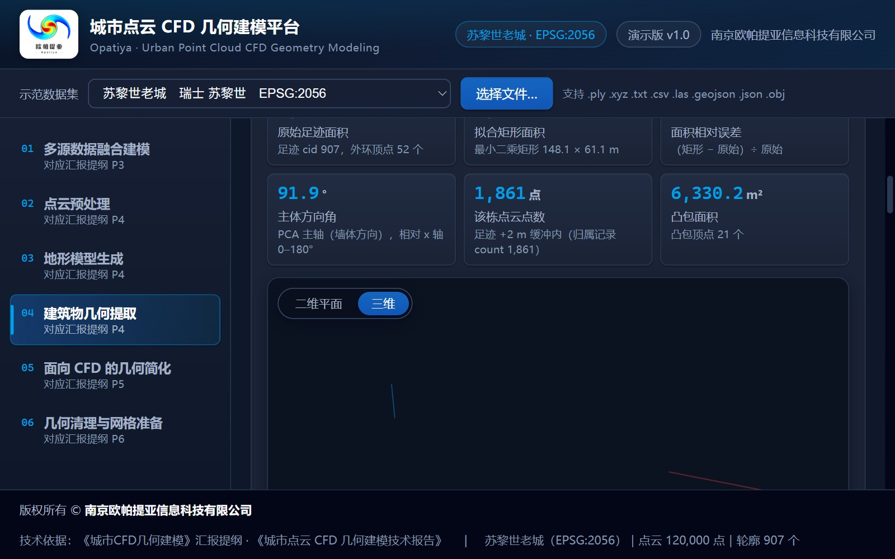
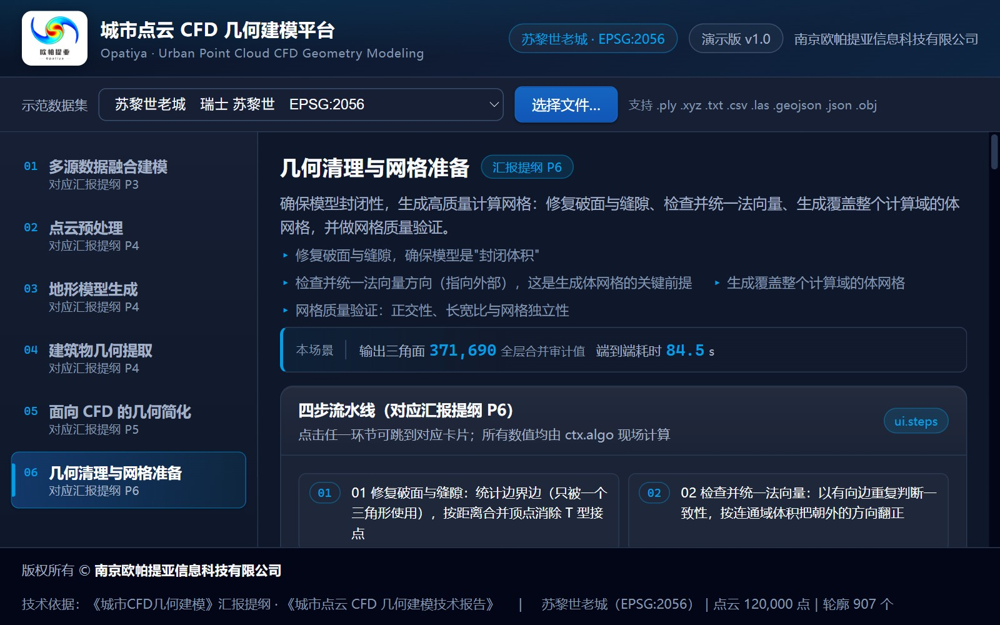

城市点云 CFD 几何建模平台 网页演示版
从 LiDAR 点云到可计算 CFD 城市几何：六个环节全程可在浏览器里演示 · 5 个真实城市场景 · 零第三方依赖
本平台把城市点云 CFD 几何建模的六个功能环节做成一个可在浏览器中直接演示的软件原型—— 多源数据融合建模 → 点云预处理 → 地形模型生成 → 建筑物几何提取 → 面向 CFD 的几何简化 → 几何清理与网格准备。 每个环节对应一个演示模块，页面上的每一个数值都来自当前数据集的实时计算或场景清单中的离线实测记录，不使用硬编码假数据。 平台为纯静态站点（HTML + CSS + 原生 ES Module），零第三方 JS/CSS 依赖、无构建步骤、零外部网络请求， 全部处理在浏览器内完成，点云与网格不上传任何服务器。

多源数据融合建模（P3）：DEM 晕渲 + 建筑轮廓 + 分类点投影四层独立开关；右侧面板给出三类数据源的本场景实际用量、 逐轮廓套合检查（有效轮廓 / 空轮廓 / 覆盖率 / 平均每栋点数）与数据源贡献度。

建筑物几何提取（二维视图）：建筑点云投影 + 原始足迹 + 最小二乘拟合矩形 + 凸包轮廓四层叠合， 读数浮层实时给出该栋点数、拟合点数与矩形边长；右侧下拉可按足迹面积选择单体，或开展拖拽框选批量拉伸。

建筑物几何提取（P4）：单体分割 + 最小二乘轮廓拟合（PCA 主轴 + 最小面积外接矩形 + 凸包）， 按 LoD1.2 平屋顶 / LoD1.3 双坡屋顶 / LoD2.2 面片屋顶拉伸成型；三维视图实时给出高度、底面面积、 三角面数与 openEdges，并可逐栋导出 OBJ。

几何清理与网格准备（P6）：破面与缝隙检测 → 按距离合并顶点修复 → 法向量检查与统一 → 体网格生成与质量验证， 四步流水线给出边界边、非流形边、欧拉示性数、翻转面数与体网格规模，用于说明模型封闭性与网格可用性。
主要功能
6 个演示模块（对应汇报提纲 P3–P6）· 5 个真实城市场景（每场景 12 万点）· 907 栋建筑轮廓 / 722 栋重建 / 成功率 99.0%（苏黎世老城）· 33 个算法 · 133 条公式 · 34 张技术图 · 数据 342 项校验 + Node 侧 120 项交叉校验全部通过
内置示范场景
平台内置 5 个真实城市场景，均由离线管线从真实城市点云 / 矢量 / 网格源数据转换而来，点云按类别分层等距抽样至 每场景 12 万点（固定随机种子，可复现），场景指标为离线处理管线的实测值。
| 场景 | 城市 | 坐标系 | 轮廓数 | 重建栋数 | 成功率 |
|---|---|---|---|---|---|
| 代尔夫特校园（TU Delft） | 荷兰 代尔夫特 | EPSG:28992 | 1,529 | 78 | 79.6% |
| 代尔夫特城郊 | 荷兰 代尔夫特 | EPSG:28992 | 338 | 241 | 100.0% |
| 科隆城区 | 德国 科隆 | EPSG:25832 | 509 | 96 | 100.0% |
| 苏黎世老城（默认） | 瑞士 苏黎世 | EPSG:2056 | 907 | 722 | 99.0% |
| 尤金城郊（autzen） | 美国 俄勒冈州尤金 | EPSG:2992（ftUS） | 69 | 10 | 55.6% |
示范数据合计 28,105,856 字节（26.8 MB）；尤金场景成功率偏低（55.6%）的原因是建筑点云极稀疏（692 万点中建筑点仅 4.96%）， 失败原因均为「轮廓缓冲区内没有归属点」——平台如实列出失败原因，不对指标做修饰。
获取与运行
- 软件部署在作者本机（本地静态站点，全部计算在浏览器内完成，数据不出本机）；本页面为软件介绍。
- 本机首次配置（一次性）：双击 城市点云CFD几何建模平台\注册软件协议.reg， 注册 pointcloud-cfd:// 启动协议。
- 日常使用：直接点击下方按钮——本机启动器会自动启动平台服务并打开界面 （服务已在运行时直接打开界面）；也可双击 城市点云CFD几何建模平台\启动软件.bat 手动启动。
技术依据与验证
平台技术依据为《城市CFD几何建模》汇报提纲与《城市点云 CFD 几何建模技术报告》，算法口径与报告同源； 交付文档包括主文档（功能、数据、导入、常见问题）、架构说明（分层、事件、数据集对象、二进制格式、生命周期与设计决策） 与验证记录（文件级 342 项数据校验、单元级 Node 断言、页面级无头浏览器 7 页验收、交互级 CDP 真实浏览器探针、视觉级像素分析）。 文档按源码的真实实现撰写，源码中的近似、抽样、上限保护与回退分支均写成明确局限——例如体素网格的正交性恒为 90°、 长宽比恒为 1.000 属理想化值，不能当作真实 CFD 网格质量指标；LoD2.2 在缺少屋顶面片数据时会回退到 LoD1.3。